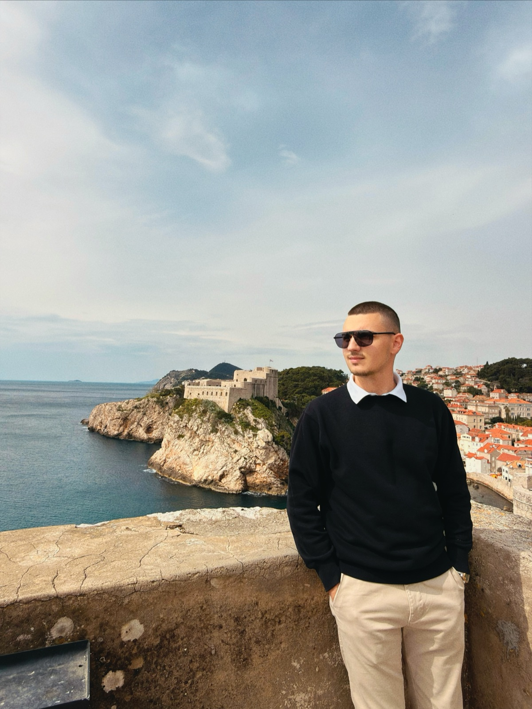
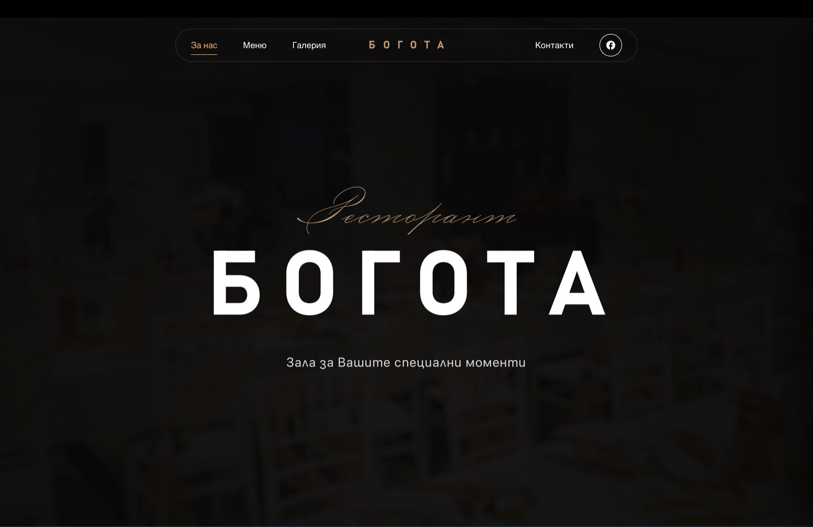
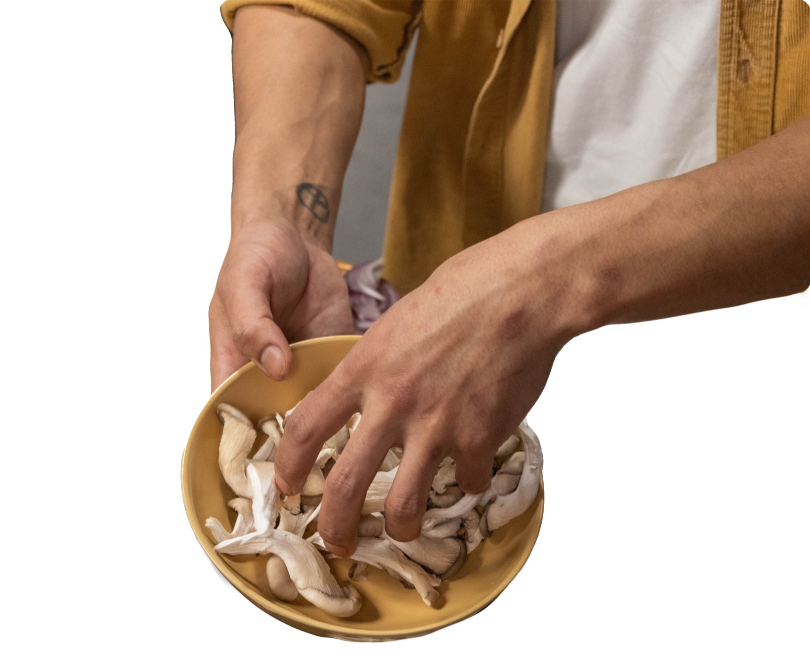
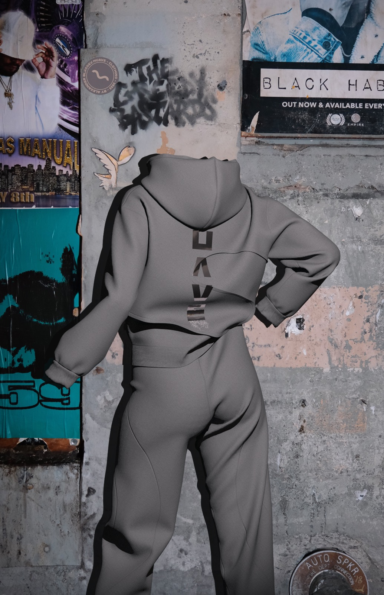
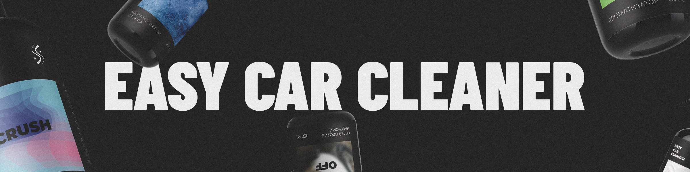
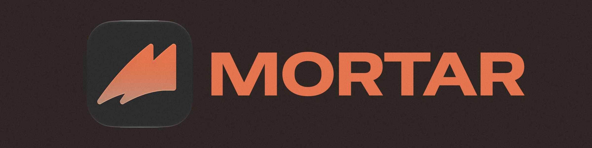

Brands, interfaces and the small details in between that make people stop, look twice and remember. Since 2017 I have worked remotely from Bulgaria for clients who needed more than a nice picture. They needed a voice, a system and a reason for people to care. I studied graphic design at university and left when the work became the better teacher. Real briefs, real deadlines and real clients sharpen you faster than any classroom ever could. Every project starts with a question, not a style. Who is this for? What should they feel? What will they do next? The answers decide the type, the colour, the grid and everything after. I sketch fast and refine slowly. The first idea is rarely the best one, so I make room for the second, the third and the one that only shows up at two in the morning. Type is my favourite material. It can whisper, shout or explain, sometimes in the same word. Colour is never decoration; it is often the first thing people remember. I like constraints. A small label, a narrow screen, a menu that has to work by candlelight. Small spaces force big ideas to become clear ones. On screen, I care about how a page moves as much as how it looks. A scroll should feel like turning a page, a button should want to be pressed, and a layout should hold together on a phone held in one hand on a crowded tram. I have designed a restaurant identity from the logo to the printed menu, a meal subscription app that makes cooking feel like a choice and not a chore, a label system for nine car care products, software for people who build for a living, and my own clothing label, Muave, where the person disappears and the movement stays. Hands at work, eyes on the detail. Let's make it matter.
I design :

— A note —
I am a graphic and web designer working remotely since 2017 across brand identity, digital interfaces, product design, packaging, and fashion. The range is wide by design; I follow the work wherever it leads.
I studied Graphic Design at university and left when it became clear I had outpaced the curriculum. The real education happened in the work itself — in real briefs, real clients, and the kind of pressure that sharpens you faster than any classroom. I later formalised parts of that knowledge through SoftUni Creative, one of Bulgaria's most recognised creative programmes.
From restaurant identities to meal-subscription apps, from packaging systems to my own clothing label — I work where visual thinking meets real purpose. Every project is treated as if it will be printed, worn, or lived with for years.
Four projects that show the range. The full archive is available on request — some of it lives in print and deserves to be seen as such.





We are extremely happy with the work on our restaurant's website and menu! Professional execution, modern design and attention to every detail. Communication was quick and easy, and the final result perfectly reflects our concept. Highly recommended!
Thanks to the attention to detail and professionalism, I was able to develop my own brand.
If you've a brand, a site, or a quiet idea that needs shape — write to me. I read every message myself.